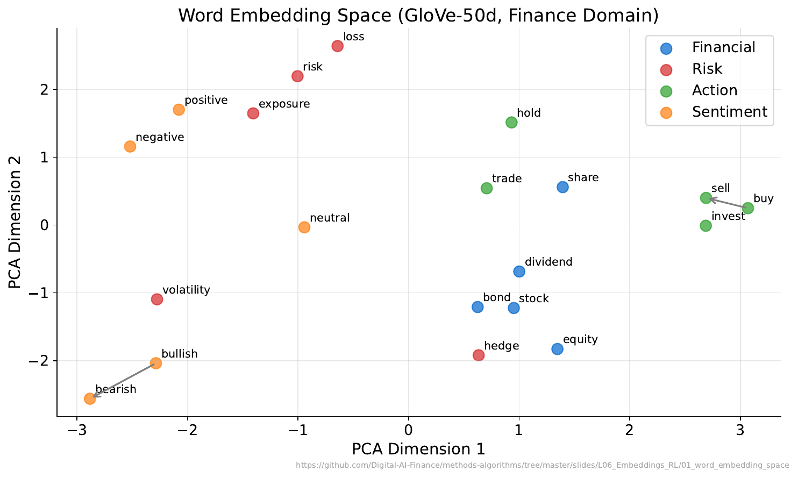
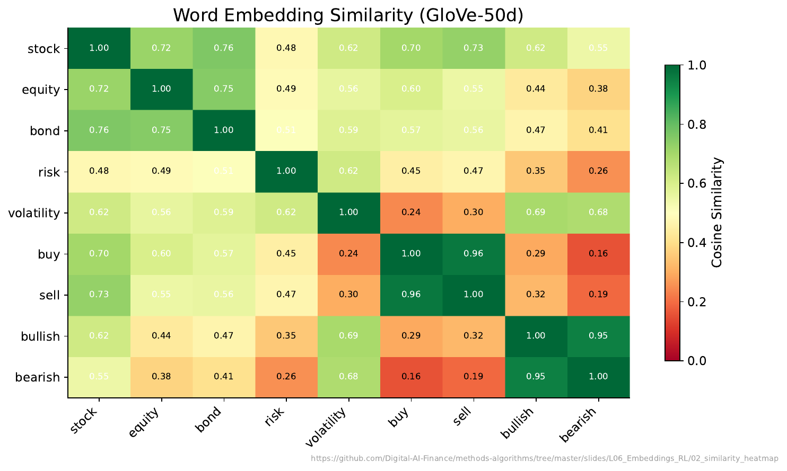
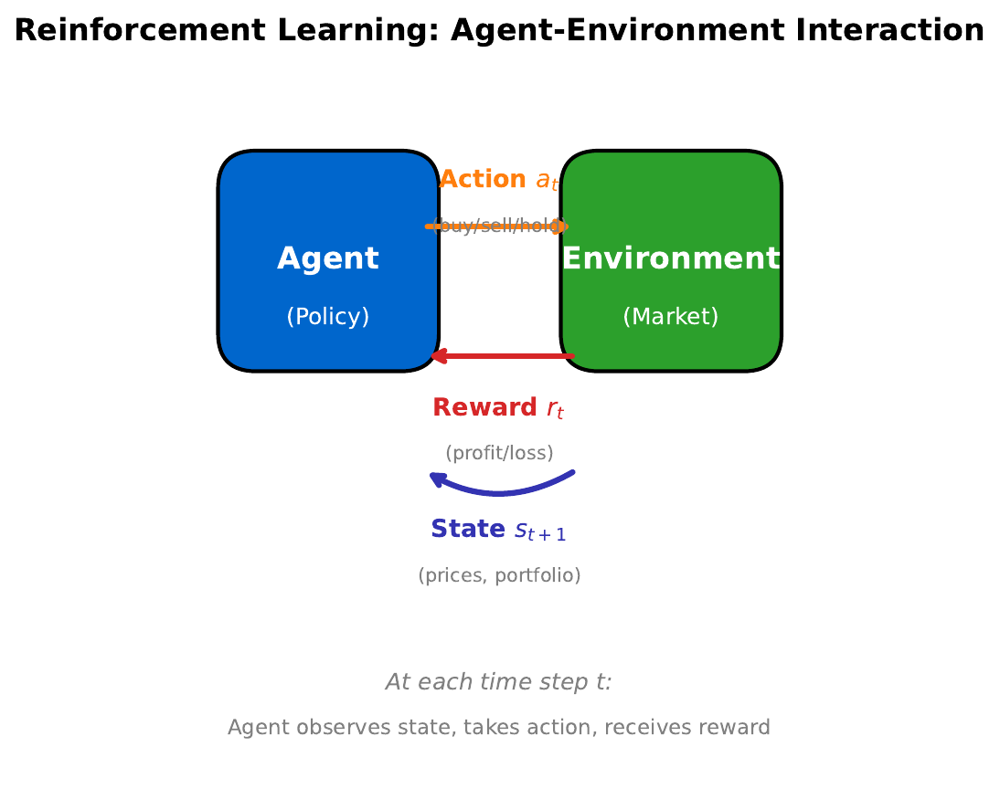
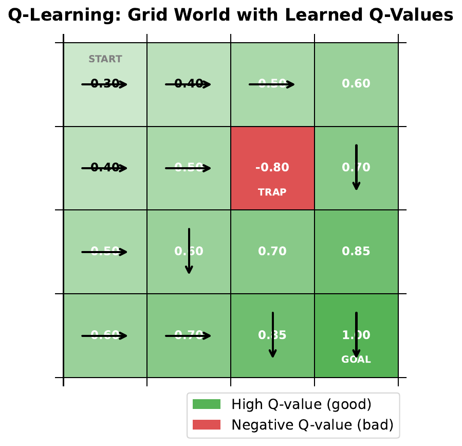
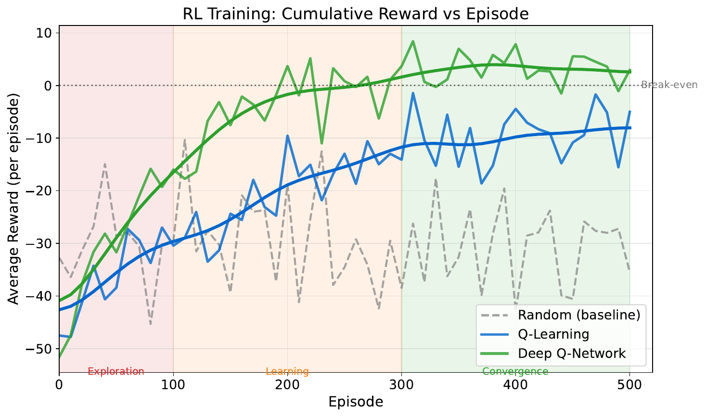

"Words as Numbers"
| Financial Term |
|---|
| stock |
| bond |
| interest |
| dividend |
| inflation |
| risk |
| return |
| portfolio |
Your Task
- Which pairs are most similar in meaning? Rank the top 3 pairs.
- How would you assign each word a score from 0-10 for "riskiness"?
- Could you add a second dimension -- say "income-generating" -- and plot the words on a 2D map?
Reveal Solution
You just created a 2D word embedding by hand! Real embeddings (Word2Vec, GloVe) learn 100-300 dimensions from billions of text examples. Similar words end up with similar vectors: $\cos(\vec{\text{stock}}, \vec{\text{bond}}) > \cos(\vec{\text{stock}}, \vec{\text{inflation}})$.
"The Meaning Map"

Your Task
- Which words are close together in the map?
- Does their proximity match your intuition from Activity 1?
- Famous example: king - man + woman = queen. What financial analogy could work?
Reveal Solution
The embedding space captures semantic relationships as geometric relationships. Possible financial analogy: stock - risk + safety = bond. These arithmetic properties emerge automatically from training on large text corpora -- the model learns meaning from context.
"How Similar?"

Your Task
- Which pair has the highest similarity score?
- Are any words surprisingly similar or different compared to your expectations?
- How might a bank use these similarity scores?
Reveal Solution
Cosine similarity measures the angle between vectors: $\cos(\theta) = \frac{\vec{a} \cdot \vec{b}}{|\vec{a}||\vec{b}|}$. Range: -1 (opposite) to +1 (identical direction). Banks use embeddings for: document search, customer query matching, sentiment analysis, fraud detection (unusual language patterns).
"The Learning Loop"

Your Task
- A robot trader can buy, sell, or hold. It earns +1 for profit, -1 for loss. What should it learn?
- How is this different from supervised learning (where someone tells you the right answer)?
- What role does the "state" play?
Reveal Solution
In Reinforcement Learning, the agent learns a policy (state to action mapping) by trial and error. Unlike supervised learning, there's no labeled dataset -- the agent discovers good actions through rewards. The state (e.g., current prices, portfolio, market indicators) determines which action is best.
"Navigate the Grid"

Your Task
- The agent starts at the top-left and wants to reach the goal. What path would you take?
- Some cells have penalties -- how do you avoid them?
- If you stored a "goodness score" for each cell+direction, how would you update it after each move?
Reveal Solution
This is Q-learning. The Q-table stores $Q(s, a)$ = expected total reward from taking action $a$ in state $s$. Update rule: $Q(s,a) \leftarrow Q(s,a) + \alpha[r + \gamma \max_{a'} Q(s',a') - Q(s,a)]$. Over many episodes, Q-values converge to optimal, and the agent learns the best path.
"Learning to Trade"

Your Task
- The agent starts badly -- why?
- When does performance start improving?
- Why does the curve plateau?
- What might cause the occasional dips?
Reveal Solution
Early episodes: the agent explores randomly (low reward). As it learns Q-values, it starts exploiting good strategies (rising reward). The plateau means the policy has converged. Dips come from exploration -- the agent occasionally tries random actions (epsilon-greedy) to discover potentially better strategies.